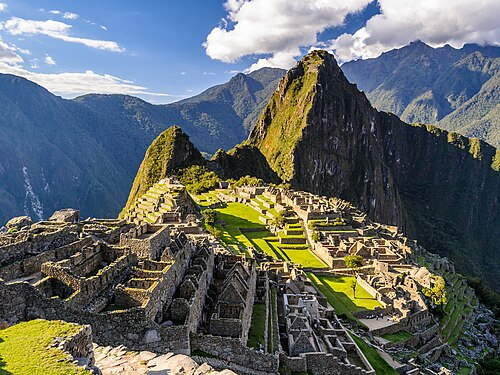
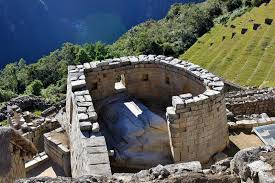
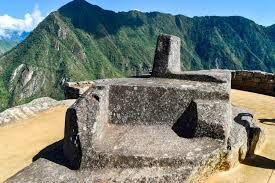
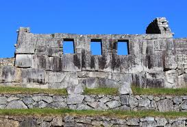

Machu Picchu es una antigua ciudad inca ubicada en lo alto de las montañas de los Andes en Perú, cerca de la ciudad de Cusco. Fue construida en el siglo XV durante el gobierno del emperador inca Pachacútec y es considerada una de las obras arquitectónicas más impresionantes del Imperio Inca. Este misterioso lugar está rodeado de naturaleza, montañas y paisajes espectaculares, lo que lo convierte en uno de los destinos turísticos más famosos del mundo. Hoy en día, Machu Picchu es reconocido como una de las siete maravillas del mundo moderno y atrae a miles de viajeros que desean descubrir su historia, su arquitectura y el legado de la cultura inca.

El Templo del Sol es una de las edificaciones más sagradas y emblemáticas de la ciudad inca de Machu Picchu, dedicada a Inti, el dios Sol. Esta estructura combina funciones religiosas y astronómicas, reflejando el profundo conocimiento y la cosmovisión espiritual de los incas.

El Intihuatana es un monolito tallado en piedra ubicado en la zona alta del sector urbano de Machu Picchu, en la región Cusco, Perú. Su nombre proviene del quechua Inti (sol) y huatana (atar), lo que se traduce como “el lugar donde se amarra el sol”. Es uno de los objetos rituales más emblemáticos de la civilización inca, asociado tanto a la observación astronómica como a ceremonias religiosas

El Templo de las Tres Ventanas es una de las estructuras ceremoniales más emblemáticas de la ciudadela inca de Machu Picchu, en el Perú. Ubicado en el sector oriental de la plaza principal, destaca por su arquitectura de piedra finamente labrada y por las tres grandes aberturas trapezoidales que le dan nombre
